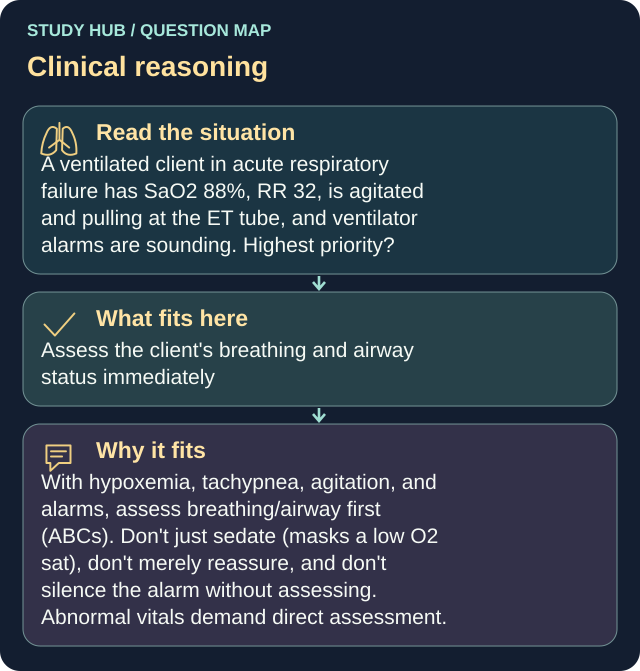

A ventilated client in acute respiratory failure has SaO2 88%, RR 32, is agitated and pulling at the ET tube, and ventilator alarms are sounding. Highest priority?
Answer
Assess the client's breathing and airway status immediately
Reasoning
With hypoxemia, tachypnea, agitation, and alarms, assess breathing/airway first (ABCs).
Clinical detail
Don't just sedate (masks a low O2 sat), don't merely reassure, and don't silence the alarm without assessing. Abnormal vitals demand direct assessment.
Why the other answers do not fit
- Administer prescribed sedation to reduce agitation
- Reassure the client and explain the ventilator's purpose
- Silence the ventilator alarm and assess the tubing
Don't just sedate (masks a low O2 sat), don't merely reassure, and don't silence the alarm without assessing.
Shared reasoning for choices without a separate note: With hypoxemia, tachypnea, agitation, and alarms, assess breathing/airway first (ABCs). Don't just sedate (masks a low O2 sat), don't merely reassure, and don't silence the alarm without assessing. Abnormal vitals demand direct assessment.
